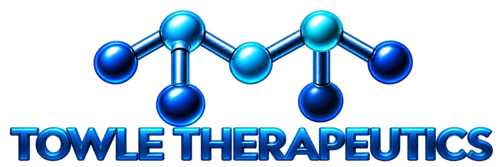

From molecular hypotheses to computational evidence.
Molecular modeling, docking, molecular dynamics, and scientific interpretation. Work directly with Tyrell R. Towle, PhD, a medicinal chemist with peer-reviewed research experience.

Brand artwork is shown separately from scientific research figures.
OUR EXPERTISE
Computational chemistry with scientific context
From a first feasibility question to an interpreted computational study, select the level of support your research requires.
Consultation & Study Design
Design the right computational experiment before investing in simulation time.
Explore service ↗02Molecular Modeling & Cheminformatics
Prepare chemical inputs and explore molecular properties with documented assumptions.
Explore service ↗03Molecular Docking & Virtual Screening
Investigate possible binding modes and prioritize hypotheses for further study.
Explore service ↗04Molecular Dynamics
Examine molecular behavior over time using documented simulation protocols.
Explore service ↗05Trajectory Analysis & Interpretation
Turn simulation trajectories into quantitative structural evidence.
Explore service ↗06Visualization & Scientific Reporting
Communicate methods and results clearly, with evidence suitable for scientific review.
Explore service ↗DIRECT EXPERTISE
Work with the scientist, not a support queue.
Your work is scoped, evaluated, and interpreted by Tyrell R. Towle, PhD. The computational infrastructure is a tool; the scientific question guides the study.
Explore peer-reviewed research →Tyrell R. Towle, PhD
Medicinal chemist · Published research in fluoroquinolone drug design, structure-based modeling, and molecular mechanisms of drug action.
Independent scientific consultantCOST CLARITY
Know what you are approving
Start with a $100 consultation, then receive a project-specific scope with labor, computing expenses, deliverables, and a spending limit.
Preliminary review and a 45-minute discussion within one hour of paid professional time.
Approved preparation, execution support, analysis and reporting. Computing costs itemized separately.
What about GPU costs?
Third-party compute is passed through at documented cost without markup. Local computing uses an agreed cost-recovery rate. No surprise overruns.
See worked examples →HOW IT WORKS
A clear path from inquiry to results
Each stage has a defined purpose; projects proceed only within an approved scope and budget.
Inquire
Share a nonconfidential research question.
Consult
Discuss fit, methods, and practical next steps.
Approve
Review a written scope and maximum budget.
Execute
Scientific preparation, computation, and QC.
Receive results
Data, figures, report and limitations.
PUBLISHED RESEARCH
Experience grounded in peer-reviewed work
Published studies demonstrate prior structure-based design, molecular docking, medicinal chemistry, and experimental interpretation.
Medicinal Chemistry Letters
Design, synthesis, and evaluation of novel N-1 fluoroquinolone derivatives
Docking-informed investigation of molecular interactions near the DNA gyrase active-site tyrosine, combined with synthesis and experimental assays.
Read publications & research →START WITH THE QUESTION
What would you like to investigate?
Send a short, nonconfidential description. We'll establish scientific fit before any substantial work begins.